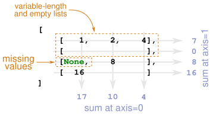

What is an “Awkward” Array?#
import numpy as np
import awkward as ak
Versatile Arrays#
Awkward Arrays are general tree-like data structures, like JSON, but contiguous in memory and operated upon with compiled, vectorized code like NumPy.
They look like NumPy arrays:
ak.Array([1, 2, 3])
[1, 2, 3] --- backend: cpu nbytes: 24 B type: 3 * int64
Like NumPy, they can have multiple dimensions:
ak.Array([
[1, 2, 3],
[4, 5, 6]
])
[[1, 2, 3], [4, 5, 6]] ----------- backend: cpu nbytes: 72 B type: 2 * var * int64
These dimensions can have varying lengths; arrays can be ragged:
ak.Array([
[1, 2, 3],
[4],
[5, 6]
])
[[1, 2, 3], [4], [5, 6]] ----------- backend: cpu nbytes: 80 B type: 3 * var * int64
Each dimension can contain missing values:
ak.Array([
[1, 2, 3],
[4],
[5, 6, None]
])
[[1, 2, 3], [4], [5, 6, None]] -------------- backend: cpu nbytes: 136 B type: 3 * var * ?int64
Awkward Arrays can store numbers:
ak.Array([
[3, 141],
[59, 26, 535],
[8]
])
[[3, 141], [59, 26, 535], [8]] --------------- backend: cpu nbytes: 80 B type: 3 * var * int64
They can also work with dates:
ak.Array(
[
[np.datetime64("1815-12-10"), np.datetime64("1969-07-16")],
[np.datetime64("1564-04-26")],
]
)
[[1815-12-10, 1969-07-16], [1564-04-26]] -------------------------- backend: cpu nbytes: 48 B type: 2 * var * datetime64[D]
They can even work with strings:
ak.Array(
[
[
"Benjamin List",
"David MacMillan",
],
[
"Emmanuelle Charpentier",
"Jennifer A. Doudna",
],
]
)
[['Benjamin List', 'David MacMillan'], ['Emmanuelle Charpentier', 'Jennifer A. Doudna']] -------------------------------------------------- backend: cpu nbytes: 132 B type: 2 * var * string
Awkward Arrays can have structure through records:
ak.Array(
[
[
{"name": "Benjamin List", "age": 53},
{"name": "David MacMillan", "age": 53},
],
[
{"name": "Emmanuelle Charpentier", "age": 52},
{"name": "Jennifer A. Doudna", "age": 57},
],
[
{"name": "Akira Yoshino", "age": 73},
{"name": "M. Stanley Whittingham", "age": 79},
{"name": "John B. Goodenough", "age": 98},
],
]
)
[[{name: 'Benjamin List', age: 53}, {name: 'David MacMillan', ...}],
[{name: 'Emmanuelle Charpentier', age: 52}, {name: ..., ...}],
[{name: 'Akira Yoshino', age: 73}, ..., {name: 'John B. Goodenough', ...}]]
----------------------------------------------------------------------------
backend: cpu
nbytes: 273 B
type: 3 * var * {
name: string,
age: int64
}In fact, Awkward Arrays can represent many kinds of jagged data. They can possess complex structures that mix records, and primitive types.
ak.Array(
[
[
{
"name": "Benjamin List",
"age": 53,
"institutions": [
"University of Cologne",
"Max Planck Institute for Coal Research",
"Hokkaido University",
],
},
{
"name": "David MacMillan",
"age": 53,
"institutions": None,
},
]
]
)
[[{name: 'Benjamin List', age: 53, institutions: [...]}, {name: ..., ...}]]
---------------------------------------------------------------------------
backend: cpu
nbytes: 226 B
type: 1 * var * {
name: string,
age: int64,
institutions: option[...They can even contain unions!
ak.Array(
[
[np.datetime64("1815-12-10"), "Cassini"],
[np.datetime64("1564-04-26")],
]
)
[[1815-12-10, 'Cassini'],
[1564-04-26]]
-------------------------
backend: cpu
nbytes: 90 B
type: 2 * var * union[
datetime64[D],
string
]NumPy-like interface#
Awkward Array looks like NumPy. It behaves identically to NumPy for regular arrays
x = ak.Array([
[1, 2, 3],
[4, 5, 6]
]);
ak.sum(x, axis=-1)
[6, 15] ---- backend: cpu nbytes: 16 B type: 2 * int64
providing a similar high-level API, and implementing the ufunc mechanism:
powers_of_two = ak.Array(
[
[1, 2, 4],
[None, 8],
[16],
]
);
ak.sum(powers_of_two)
np.int64(31)
But generalises to the tricky kinds of data that NumPy struggles to work with. It can perform reductions through varying length lists:

ak.sum(powers_of_two, axis=0)
[17, 10, 4] ---- backend: cpu nbytes: 24 B type: 3 * int64
Lightweight structures#
Awkward makes it east to pull apart record structures:
nobel_prize_winner = ak.Array(
[
[
{"name": "Benjamin List", "age": 53},
{"name": "David MacMillan", "age": 53},
],
[
{"name": "Emmanuelle Charpentier", "age": 52},
{"name": "Jennifer A. Doudna", "age": 57},
],
[
{"name": "Akira Yoshino", "age": 73},
{"name": "M. Stanley Whittingham", "age": 79},
{"name": "John B. Goodenough", "age": 98},
],
]
);
nobel_prize_winner.name
[['Benjamin List', 'David MacMillan'], ['Emmanuelle Charpentier', 'Jennifer A. Doudna'], ['Akira Yoshino', 'M. Stanley Whittingham', 'John B. Goodenough']] ------------------------------------------------------------------- backend: cpu nbytes: 217 B type: 3 * var * string
nobel_prize_winner.age
[[53, 53], [52, 57], [73, 79, 98]] -------------- backend: cpu nbytes: 88 B type: 3 * var * int64
These records are lightweight, and simple to compose:
nobel_prize_winner_with_birth_year = ak.zip({
"name": nobel_prize_winner.name,
"age": nobel_prize_winner.age,
"birth_year": 2021 - nobel_prize_winner.age
});
nobel_prize_winner_with_birth_year.show()
[[{name: 'Benjamin List', age: 53, birth_year: 1968}, {name: ..., ...}],
[{name: 'Emmanuelle Charpentier', age: 52, birth_year: 1969}, {...}],
[{name: 'Akira Yoshino', age: 73, birth_year: 1948}, ..., {name: ..., ...}]]
High performance#
Like NumPy, Awkward Array performs computations in fast, optimised kernels.
large_array = ak.Array([[1, 2, 3], [], [4, 5]] * 1_000_000)
We can compute the sum in 3.37 ms ± 107 µs on a reference CPU:
ak.sum(large_array)
np.int64(15000000)
The same sum can be computed with pure-Python over the flattened array in 369 ms ± 8.07 ms:
large_flat_array = ak.ravel(large_array)
sum(large_flat_array)
np.int64(15000000)
These performance values are not benchmarks; they are only an indication of the speed of Awkward Array.
Some problems are hard to solve with array-oriented programming. Awkward Array supports Numba out of the box:
import numba as nb
@nb.njit
def cumulative_sum(arr):
result = 0
for x in arr:
for y in x:
result += y
return result
cumulative_sum(large_array)
15000000